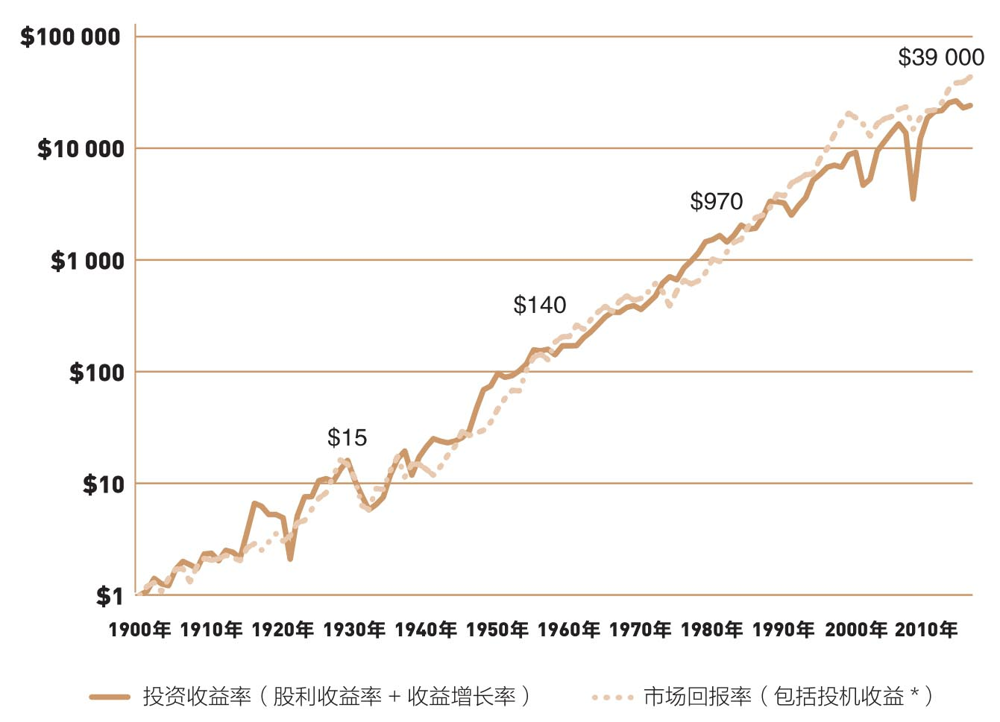
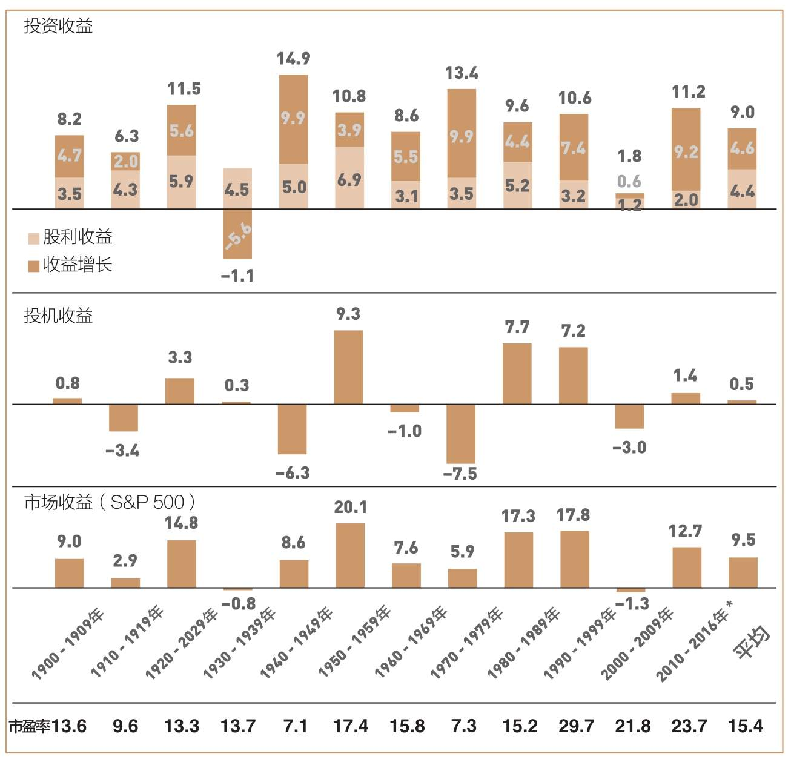

短期来看，股市是一台投票机；长期来看，股市是一台称重机。你是不停投票还是耐心等它趋于水平？
投资与投机，长期积累与短期博弈，你认为谁会赢谁会输？
在第1章中，戈特罗克家族的精彩故事清楚地说明了投资的核心现实。巴菲特曾说：“所有投资者从现在开始到‘审判日’为止所能赚取的回报总额，只能是他们所投资的企业在此期间创造的收益总和。”巴菲特以他自己的伯克希尔·哈撒韦公司为例阐述了这一点。对于这家在他手里经营多年的上市投资公司，他指出：
股票的市场表现偶尔会超过或低于企业的经营业绩，于是，少数股东可以通过买卖股票获得超额回报，其交易对手则要承担相对的损失。然而，长期而言，伯克希尔全体股东的总收益必然要等于公司的经营利润总额。
投资者经常忘记这个永恒的原则，但事实并不会以我们的意志为转移。历史一再告诉我们，我们稍加用心就会发现：美国企业赚取的长期累计收益，年度股利收益率（dividend yield）与年度收益增长率（rate of earnings growth）之和，以及美国股市的累计收益之间的相关性。如果你思考一下这些关系，也许会恍然大悟：这难道不就是最简单的常识吗？
证据？我们只要看一下美国股市和美国企业在整个20世纪中的表现就足够了（见图2-1）。股票的总体年均收益率为9.5%。单纯的投资收益率为9.0%——包括4.4%的股利收益率，以及4.6%的收益增长率。

图2-1 1900—2016年投资收益率与市场回报率的比较，从期初1美元开始
*市盈率变化的影响。
每年平均0.5%的差异，来自我所说的投机收益。投机收益可能是正数，也可能是负数，这取决于投资者在特定期限内，愿意为每1美元收益所支付的价格，是高于还是低于期初的价格。
市盈率（股票价格与收益的比值，P/E）是指投资者愿意为1美元的收益支付的价格。投资者对市场的信心起伏不定，市盈率也会随之上下波动(1)。每当贪婪主宰市场的时候，我们就会看到市盈率居高不下；而当希望成为市场的主旋律的时候，市盈率就会会较为适中；而当失望与恐惧弥漫市场时，市盈率则会一落千丈。于是，股价会起伏波动，周而复始，投资者的情绪波动也会反映在投机收益上，有时它们可能暂时偏离经济基本面长期向上的发展趋势。
如图2-1所示，股票投资收益（股利收益加上收益增长）与市场总体收益（包括投机收益的影响）趋向一致。两者之间出现差异，只是短期现象。
这些收益经过116年的复利，最终的结果让人叹为观止。按9.5%的年投资收益率计算，1900年投资的1美元，到了2015年就会变成43 650美元(2)。当然，我们当中很少有人能活上116年，但是，就像戈特罗克家族那样，在经历了世代传袭后，复利的魔力会让我们的后代体会到无尽的神奇。也许这就是终极赢家的游戏吧。
从图2-1中我们可以清楚地看到，企业的投资收益一直处于波动中。某些时候——比如说20世纪30年代初期的“大萧条”，收益波动十分剧烈。但是，如果稍微拉开距离、眯着眼睛看，企业收益的基本趋势仍像是一条平稳上升的直线，虽然每隔一阵子就会出现周期性波动。
可以肯定的是，股票市场收益有时会远远超过经济基本面（比如说20世纪20年代末、20世纪70年代初以及20世纪90年代末，甚至是目前的行情）。但这只是暂时现象，经济基本面就像一块强大的磁铁，很快就会把股市这块铁吸到自己身上，尽管从偏离到回归往往需要经历一段时间（例如，20世纪40年代中期、20世纪70年代末，以及2003年出现的股市低谷）。这就是所谓的均值回归（reversion or regression to mean, RTM），我们会在第11章更加深入地讨论这个主题。
一旦盲目专注于瞬息万变的短期股市时，投资者总是会对长期历史趋势视而不见。当股市收益高于长期平均值时，我们却不认为这很少是因为投资基本面很好，也就是说增长并非是因为收益增长率和股利收益率得到提升。相反，股票收益率的剧烈波动，更多还是源于投资者的心理因素，并通过不断变化的市盈率反映出来。
图2-1表明，尽管股票价格经常与企业价值脱钩，但长期而言，决定股价的依然是现实。因此，虽然投资者从情感和直觉上更愿意认为，历史必然要延续到未来，但是在现实生活中，任何包含着高股票投机收益的历史收益率，对我们认识未来都是彻头彻尾的误导。至于为什么不能用历史收益率来预测未来，我们只需要记住伟大的英国经济学家——约翰·梅纳德·凯恩斯（John Maynard Keynes）在81年前写下的话：
用历史经验归纳得来的前提去推测未来，非常危险。除非我们能解释历史如此的根本原因。
既然能解释历史如此的根本原因，自然也能对未来作出合理的预测。但果真如此的话，何必还要用历史去推断未来呢？凯恩斯帮助我们认识了其中的不同。他指出，对股票的长期预期是经营（“对资产在整个寿命期内的预期收益进行预测”）和投机（“对市场的心理进行预测”）的结合。我对这些论述相当熟悉，因为66年前，我已经把它们写进我的普林斯顿大学毕业论文，论文的标题是《投资公司的经济角色》（The Economic Role of the Investment Company）。也许是命中注定，这也成了我进入共同基金领域的起点。
只要观察10年期的股票市场收益（见图2-2），就能清楚认识到其收益的二重性。按照凯恩斯的思路，我把股票市场收益划分为两个部分：①投资收益（经营），最初实现的股利收益加上随后派生的收益增长，它们共同构成了我们所说的企业“内在价值”；②投机收益，即市盈率变动对股票价格的影响。我们首先从投资收益入手。

图2-2 10年期的投资收益，1900—2016年（年度百分比）
*此处统计至2016年。市盈率参考每个10年期期末的数据。1900年的市盈率是12.5。
图2-2最上面的部分，显示了1900年以来10年期的年均投资收益率。我们首先可以看到，在每个10年期内，股利收益在总收益中的份额均非常稳定：全部是正值，平均值为4%，只有2次超出了3%～7%的范围。
再看一下收益增长对投资收益的贡献，除了20世纪30年代“大萧条”时期之外，收益增长对投资收益的贡献在每个10年期内均为正值，并且在几个10年期超过了9%，一般在4%～7%，平均值为4.6%。
结论：总投资收益仅在一个10年期内出现过负值。这些10年期的总投资收益——企业经营所创造的盈利——极为稳定，在各年度基本保持在8%～13%，平均值为9%。
现在纳入投机收益，如图2-2中间部分所示。对比各个10年期相对稳定的股利收益和收益增长，投机收益的波动幅度相当大。市盈率上下波动，而投机收益受其影响十分明显。例如，如果市盈率每10年增长100%，从10倍增加到20倍，那么对应的年投机收益率增加了7.2%。
如图2-2所示，当一个10年期的投机收益为显著的负数时，随后10年期就会出现对应的正的投机收益。例如，20世纪10年代的投机收益是负值，而20世纪20年代的投机收益发生反转；令人沮丧的20世纪40年代后，是欣欣向荣的20世纪50年代；在沮丧的20世纪70年代之后，就迎来了飙涨的20世纪80年代。
显而易见，这种模式是均值回归。均值回归是指股票收益率随时间推移而回归到长期常态水平的趋势。高收益期后一般会出现低收益期，反之亦然。但令人不解的是，在20世纪八九十年代，投机收益居然接连出两个10年的繁荣期，这在过去从未发生。
1999年4月，市盈率增长到了史无前例的34倍，但市场很快回归理性，此后的股市大跌顺理成章。随着企业收益持续稳定增长，市盈率已从20世纪初的15倍增长到目前的23.7倍。在这段时间里，相比企业长期赚取的年度投资收益，投机收益只提升了0.5%。
投资收益与投机收益之和等于股票市场总收益。尽管投机收益在绝大多数10年期内均对总收益产生了较大影响，但从长期来看，却几乎没有任何影响。9.5%的年均收益率几乎全部是由企业创造的，而只有区区0.5%来自投机收益。
其中的原因很清楚：股票收益几乎完全取决于由企业创造的投资收益。至于反映在投机收益上的投资者心理因素，几乎对股市总收益没有影响。因此，决定长期股票收益的是经济因素，而心理因素对短期市场的影响将随时间逐渐消失。
我在这个行业里摸爬滚打了66年以上，但依然不知该如何预测投资者的心理变化(3)。好在投资的数学基础还算简单，这让我可以对长期投资走势作出精确预测。
为什么？很简单，股票市场提供的长期收益，几乎完全取决于投资收益，也就是美国企业创造的利润和股利。换句话说，虽然梦想（我们为购买股票所支付的价格）经常脱离现实（企业的内在价值），但长期的主导力量依然是客观现实。
为了充分说明这个问题，我们不妨设想投资由两种不同的游戏构成，这也是多伦多大学罗特曼管理学院（Rotman School of Management）院长罗杰·马丁（Roger Martin）的说法。一种是“真实市场，无数大型上市公司彼此竞争。真实公司花费真实的资金，制造与销售真实的产品与服务。只要它们有足够的能力，就可以获得真实利润，向股东支付真实股利。当然，这场游戏同样也需要真实的策略、决策和技能，还有真实的创新与远见”。而另一种市场被称为预期市场，与真实市场保持着松散的联系，此时“价格并不依赖销售毛利或是净利润。短期而言，当投资者预期膨胀时，股价便会上涨，而此时的销售额、毛利或利润却未必增加”。
为了认清两者间的巨大差异，我还要补充一点。预期市场基本是投资者预期的产物。他们总想猜测其他投资者如何预期，以及其他人会对市场上的新消息产生怎样的反应。预期市场的本质就是投资，而真实市场的实质则是投资。因此，股票市场就是对商业投资的巨大干扰。
绝大多数情况下，它把投资者的注意力吸引到那些转瞬即逝、起伏不定的短期预期上，而不是那些真正有价值的东西——投资收益只能源于企业经营创造的长期收益。
莎士比亚曾写道：“（它就像）一个白痴讲的故事，尽管有声有色，但却空洞无物。”这也适合用来描述纷繁喧闹的股票市场。在这里，股票价格每时每刻都在上下波动，让人无所适从。因此，我送给投资者的建议是忽略金融市场上的那些短期噪音，关注企业经营的长期状况。想要投资成功，就要摆脱股票价格的预期市场，融入企业的真实市场。
我们只需牢记本杰明·格雷厄姆（Benjamin Graham）的教导。他是《聪明的投资者》（The Intelligent Investor）一书的作者，以及沃伦·巴菲特的导师。在讨论投资本质的时候，他对财富的概念作出了精辟的剖析：“就短期而言，股票市场是一台投票机……但是从长期来看，股票市场是一台称重机。”
之后，格雷厄姆还提出了一个精妙的比喻——“市场先生”。
“如果你花1 000美元购买了某一私人企业的一小部分股票。你的一位合作伙伴——市场先生——非常愿意帮助你。每天他都会乐此不疲地告诉你，他认为这些股票值多少钱，然后再按照他的计算买卖这些股票。某些情况下，他的估价似乎还算合理，企业的发展情况和市场预期也支持他的观点。但这位市场先生却喜怒无常，常常受制于自己的情绪，时而激情高涨，时而畏惧恐慌，这又让他的判断难免带上感情色彩，甚至变得荒谬。
“如果你是一位足够谨慎的投资者，你是否会让市场先生每天变动的情绪左右你对这1 000美元股票所作出的价值判断呢？当然，只有在你认同他的观点，或是你想和他做生意的时候，你才会这样做。在大多数情况下，你对自己的股票值多少钱，肯定会有自己的想法。真正的投资者……应该做得更出色，他们应该忘却股票市场，把目光集中到股利回报以及企业的经营成果上。”
(1)利率也会影响到市盈率，只不过影响可能很不规则。因此，我在这里只是点到为止。
(2)我们还是要公正地看待这一问题。如果我们按6.3%的真实收益率（扣除3.2%的通货膨胀因素），而不是9.5%的名义投资收益率作复利计算，那么最初这1美元的累计收益就只有1 339美元了。无论怎样，超过1 300倍的财富增长率也足以让人瞠目结舌了。
(3)在这个问题上，很多人与我有同感。我还没听说有谁能够稳定做到这一点。事实上，从事金融研究工作这么多年，我从未见过有谁真能做到。